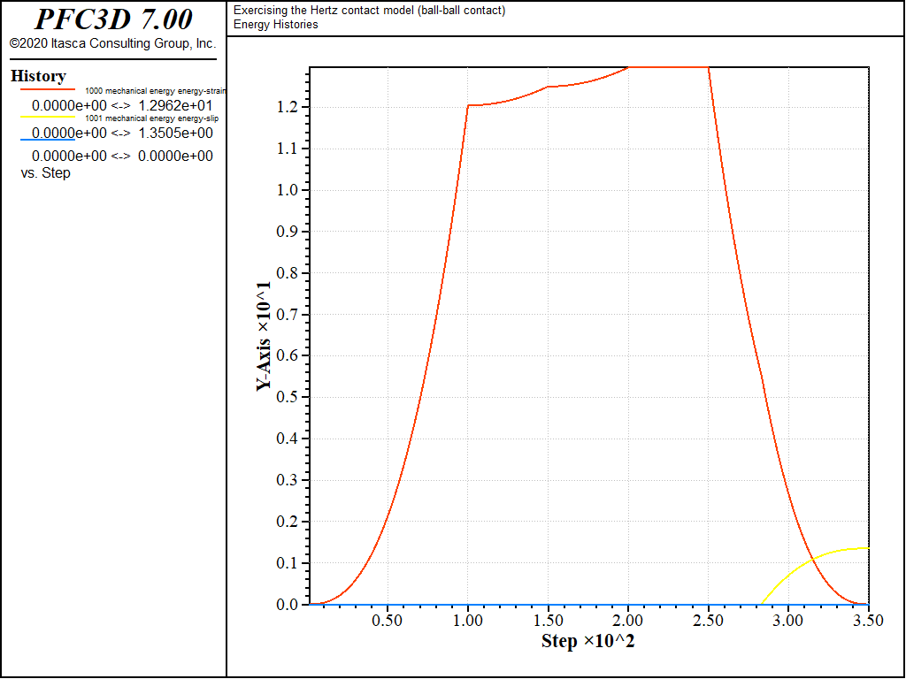
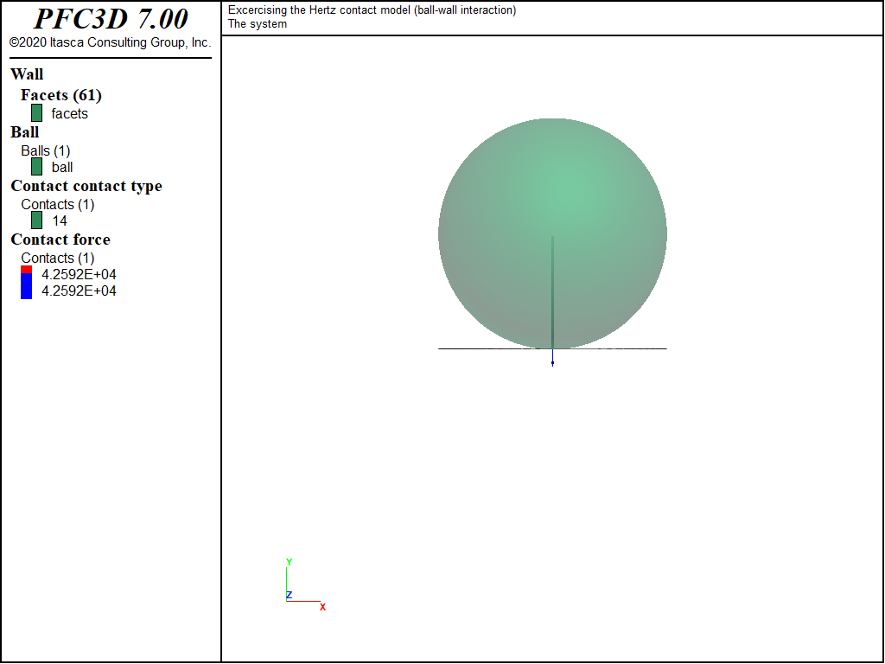
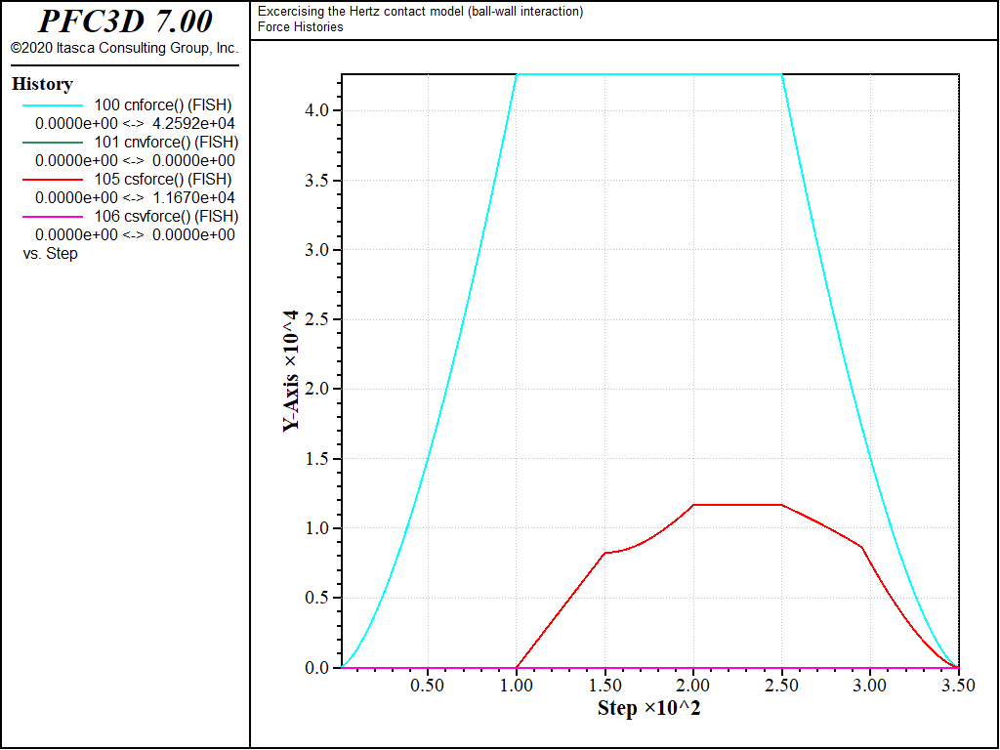
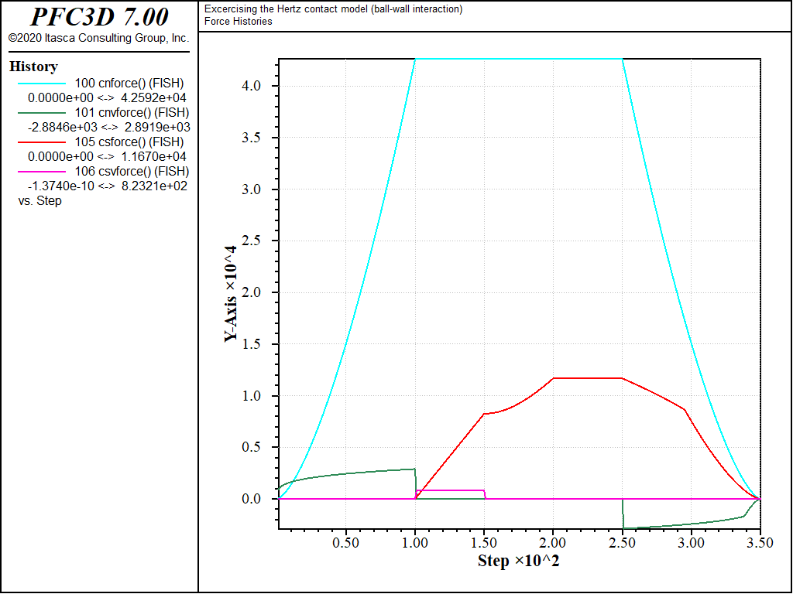
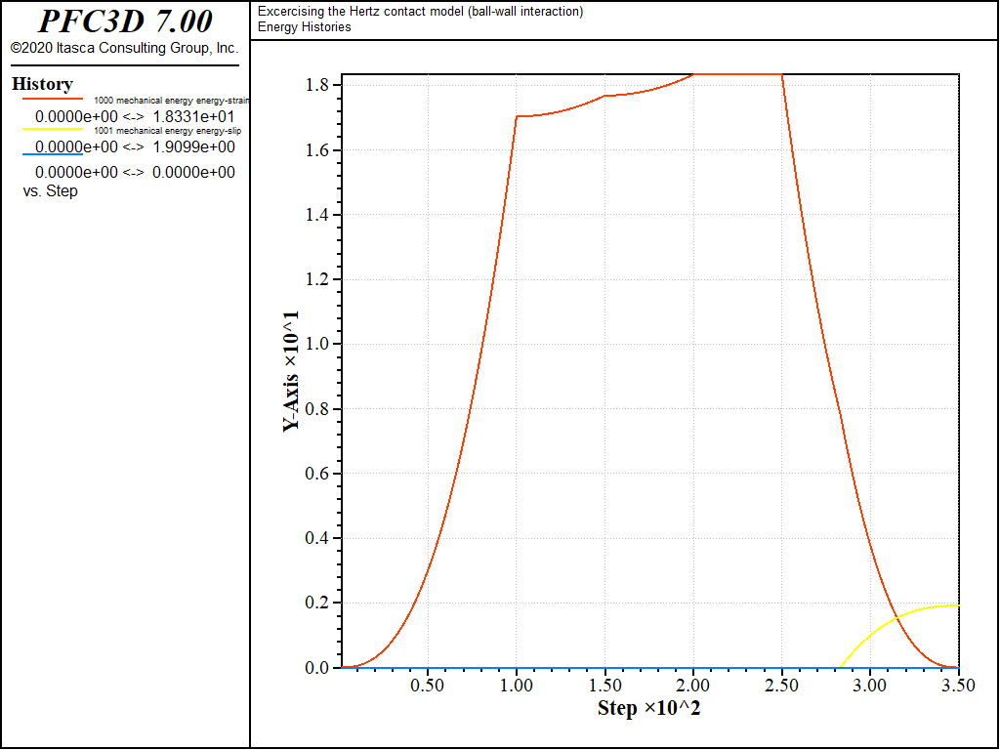
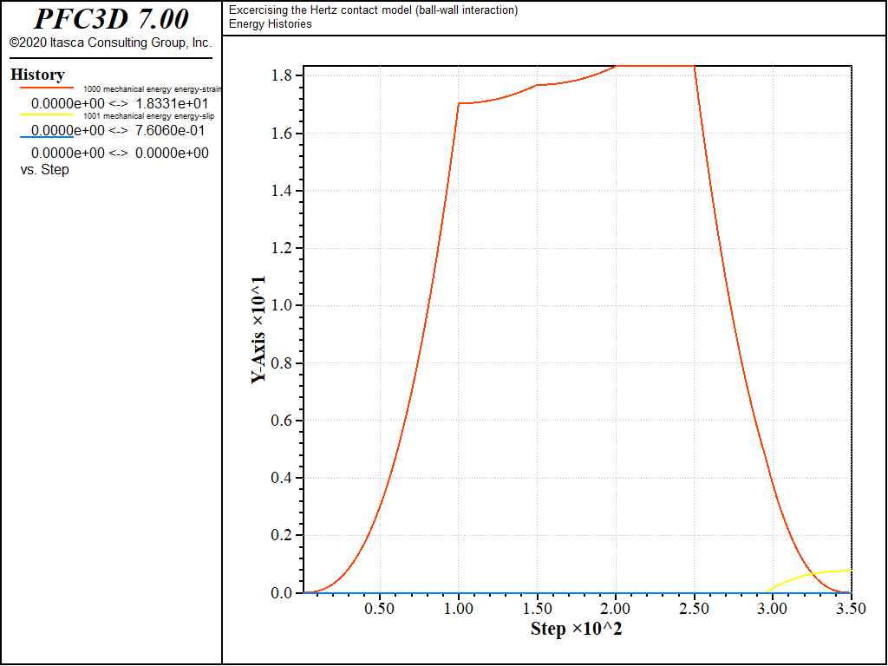

Hertz 接触模型：复杂加载路径
问题描述
注意
本算例的项目文件可在 PFC 中查看或运行。[1]所用的数据文件（data files）列于本算例末尾。
Hertz 模型（Hertz Model） 提供带黏性阻尼器的非线性弹性力-位移规律。本算例的目的是分析单个接触在复杂加载路径下的响应。文中讨论并比较了球-球接触与球-墙相互作用的结果。
PFC3D 模型
建立两个简单系统。第一个系统由两个相同的、直径为单位长度的球颗粒组成；在第二个系统中，底部的球颗粒被替换为一面圆形墙体。
两个接触体的全部自由度均被固定，通过使顶部球颗粒产生位移来对接触施加荷载，加载路径如下（在全局坐标系中）：
- 法向加载，\(t\) = 0.1 [time-unit]（沿 \(\mathbf{Y}\) 的加载位移）
- 滚动，\(t\) = 0.05 [time-unit]（绕 \(\mathbf{Z}\) 轴的转动）
- 滚动，\(t\) = 0.05 [time-unit]（绕 \(\mathbf{X}\) 轴的转动）
- 扭转，\(t\) = 0.05 [time-unit]（绕 \(\mathbf{Y}\) 轴的转动）
- 法向卸载，\(t\) = 0.1 [time-unit]（沿 \(\mathbf{Y}\) 的卸载位移）
对两个系统，同样的加载路径重复三次，每次采用如下不同的一组属性（属性的详细说明与列表请参阅“Hertz 模型（Hertz Model）”一节）：
- \(G\) = 1.0 × 109，\(\nu\) = 0.3，且 \(\mu\) = 0.5。
- 与 1. 相同，但 \(M_s\) = 1（启用法向卸载时按比例缩减剪力的功能）。
- 与 2. 相同，但 \(\beta_n=\beta_s= 0.5\) 与 \(M_d\) = 1（启用黏性阻尼）。
模型结果
球-球接触

图 1：加载阶段 1a 结束时的球-球接触模型。
两个相同的、直径为单位长度的球颗粒承受上文详述的加载路径。图 1（Fig. 1） 给出了加载阶段 1a（法向加载）结束时系统的状态。在该图中，接触被表示两次：一次表示为垂直于接触平面的直线，一次表示为与接触平面共面的圆盘。
加载 1、2 和 3 期间监测到的法向力和剪切力（弹簧与阻尼器中的力均包含在内）大小的历史分别汇总于图 2（Figs. 2） 至 4。
弹簧中法向力的演化在三种情形下完全相同：在法向加载阶段 a) 期间，它呈非线性增长；在滚转与扭转加载阶段 b)、c) 和 d) 期间，它保持恒定值；随后在法向卸载阶段 e) 期间，它呈非线性地消失。其最大值对应 1.0 × 10-3 [length-unit] 的重叠量，与解析解 3.0117 × 104 [force-unit] （由方程 Hertz 接触模型说明中的 (3) 和 (4)（(3) and (4) in the Hertz contact model description） 给出）一致 [SE：请核实上文中的链接与引用是否正确]。

图 2：加载路径 1 期间弹簧力与阻尼器力（法向与剪切）的演化。球颗粒-球颗粒接触。

图 3：加载路径 2 期间弹簧力与阻尼器力（法向与剪切）的演化。球颗粒-球颗粒接触。

图 4：加载路径 3 期间弹簧力与阻尼器力（法向与剪切）的演化。球颗粒-球颗粒接触。
在情形 2) 和 3) 中，弹簧内剪切力的演化相同，但在情形 1) 中因 \(M_s\) 的取值不同而有所不同。在情形 1) 中，剪切力在法向加载阶段 a) 期间保持为零，随后在滚转加载阶段 b) 期间呈线性增长。在后一阶段中，斜率由初始切向剪切刚度给出，而该刚度在重叠量不变时为常数（方程 Hertz 接触模型说明中的 (11)（(11) in the Hertz contact model description））。[SE：请核实上文中的链接与引用是否正确]在滚转阶段 c) 期间，尽管重叠量保持不变（因而初始切向剪切刚度也不变），剪切力的大小仍呈非线性增长。这是因为加载方向发生了改变，此时剪切力由两个分量组成（分别沿 \(\mathbf{X}\) 与 \(\mathbf{Z}\) 全局轴）。剪切力的大小不受扭转（加载阶段 d)）影响，因为该阶段内不产生剪切位移。然而，剪切力矢量的方向会适应球颗粒之间的相对扭转，如图 5（Fig. 5） 所示：在扭转加载阶段（力学时间从 0.2 至 0.25 [time-unit]），剪切力 x 分量的绝对值线性减小，而剪切力 z 分量的绝对值线性增大。最后，由于在法向卸载阶段 1e) 期间不产生剪切位移，剪切力在该阶段开始时保持恒定（图 2（Fig. 2），力学时间从 0.25 至 \(\approx 0.28\) [time-unit]）。然而，随着卸载的进行，最终会满足库仑滑移准则，剪切力随法向力一同消失（力学时间从 \(\approx 0.28\) 至 0.35 [time-unit]）。

图 5：加载路径 1 期间弹簧剪切力分量的演化。球颗粒-球颗粒接触。
情形 2) 和 3) 中剪切力的演化与情形 1) 相似，不同之处在于法向卸载阶段 e)。在这些情形下，法向卸载时的剪切力缩放功能已启用（\(M_s\) = 1）。因此，剪切力在法向力减小的同时开始线性减小，直至满足库仑准则，此后剪切力按比例随法向力消失（图 2（Fig. 2），力学时间从 0.25 至 0.35 [time-unit]）。由于情形 2) 和 3) 中滑动开始时的剪切力大小低于情形 1)，滑动过程中耗散的能量也将更低。比较图 6（Figs. 6）、图 7 和 图 8 即可看出这一点，这些图分别给出了加载情形 1)、2) 和 3) 期间接触能（应变能以及滑移功与阻尼器功）的演化。请注意，黏性阻尼仅在加载情形 3) 中启用，也只有该情形下阻尼器力（图 4（Fig. 4））与阻尼器功（图 6（Fig. 6））非零。


图 6：加载路径 1 期间接触能（应变能、滑移功与阻尼器功）的演化。球颗粒-球颗粒接触。

图 7：加载路径 2 期间接触能（应变能、滑移功与阻尼器功）的演化。球颗粒-球颗粒接触。

图 8：加载路径 3 期间接触能（应变能、滑移功与阻尼器功）的演化。球颗粒-球颗粒接触。
球颗粒-墙体相互作用


图 9：加载阶段 1a 结束时的球颗粒-墙体相互作用模型。
图 9（Fig. 9） 给出了球颗粒-墙体相互作用情形下加载阶段 1a（法向加载）结束时的系统状态。在此情形下，球颗粒与构成墙体的各面片之间存在多个接触。然而，由于完全接触解析模式处于激活状态（默认设置），同一时刻只有一个接触被视为激活，尽管可能有多个接触呈现正的重叠量（更多细节请参阅面片化墙体逻辑（faceted wall logic） 的说明）。
加载 1、2 和 3 期间监测到的法向力和剪切力（弹簧与阻尼器中的力均包含在内）大小的历史分别见图 10（Figs. 10） 至 12，接触能的历史见图 13（Figs. 13） 至 15。
所有量的演化在定性上与 ball-ball 接触情形相似。然而，尽管接触剪切模量 \(G\) 与泊松比 \(\nu\) 相同，它们在定量上却不同，因为接触有效半径不同（Hertz 接触模型说明中的式 (6)（(6) in the Hertz contact model description） [SE: 核实上文的链接与参考文献是否正确]）。

图 10：加载路径 1 期间弹簧力与阻尼器力（法向与剪切）的演化。ball-facet 接触。


图 11：加载路径 2 期间弹簧力与阻尼器力（法向与剪切）的演化。ball-facet 接触。


图 12：加载路径 3 期间弹簧力与阻尼器力（法向与剪切）的演化。ball-facet 接触。


图 13：加载路径 1 期间接触能量（应变能、滑移功与阻尼器功）的演化。ball-facet 接触。


图 14：加载路径 2 期间接触能量（应变能、滑移功与阻尼器功）的演化。ball-facet 接触。

图 15：加载路径 3 期间接触能量（应变能、滑移功与阻尼器功）的演化。ball-facet 接触。
结束语
在本算例中，利用 Hertz 接触模型在复杂加载路径下考察了 ball-ball 接触与 ball-wall 相互作用。文中讨论并比较了力与能量的演化。
数据文件
cmhertz-setup.dat (3D)
model large-strain on
; 文件名：cmhertz-setup.p3dat
; 设置公共参数、加载路径与历史监测
; =============================================================================
model domain extent -2 2 -2 2 condition periodic
contact cmat default model hertz property hz_shear 1e9 hz_poiss 0.3 fric 0.5
model mechanical timestep fix 1e-3
fish define monitor
modeltime = mech.time.total
cnforce = 0
cnvforce = 0
csforce = 0
csvforce = 0
loop foreach local cp contact.list
hz_f_loc = contact.prop(cp,'hz_force')
cnforce = comp.x(hz_f_loc)
hz_fs_loc = hz_f_loc
comp.x(hz_fs_loc) = 0.0
csforce = math.mag(hz_fs_loc)
hz_fs_glob = contact.to.global(cp,hz_fs_loc)
cxsforce = comp.x(hz_fs_glob)
cysforce = comp.y(hz_fs_glob)
czsforce = comp.z(hz_fs_glob)
cnvforce = comp.x(contact.prop(cp,'dp_force'))
csvforce = comp.y(contact.prop(cp,'dp_force'))
endloop
end
fish callback add monitor 50.0
history interval 1
model history name '1' mechanical time-total
model history name '2' timestep
fish history name '100' cnforce
fish history name '101' cnvforce
fish history name '102' cxsforce
fish history name '103' cysforce
fish history name '104' czsforce
fish history name '105' csforce
fish history name '106' csvforce
model energy mechanical on
model history name '1000' mechanical energy energy-strain
model history name '1001' mechanical energy energy-slip
model history name '1002' mechanical energy energy-dashpot
fish define loading_path(root,n)
local fnamea = string.build('%1%2d_load%3a',root,global.dim,n)
local fnameb = string.build('%1%2d_load%3b',root,global.dim,n)
local fnamec = string.build('%1%2d_load%3c',root,global.dim,n)
local fnamed = string.build('%1%2d_load%3d',root,global.dim,n)
local fnamee = string.build('%1%2d_load%3e',root,global.dim,n)
command
ball attribute velocity-y -0.01 range id 1
model solve time 1e-1
model save [fnamea]
ball attribute velocity-y 0 spin-z 0.00628 range id 1
model solve time 5e-2
model save [fnameb]
ball attribute spin multiply 0.0 spin-x 0.00628 range id 1
model solve time 5e-2
model save [fnamec]
ball attribute spin multiply 0.0 spin-y 6.28 range id 1
model solve time 5e-2
model save [fnamed]
ball attribute spin multiply 0.0 velocity-y 0.01 range id 1
model solve time 1e-1
model save [fnamee]
endcommand
end
program return
; =============================================================================
; 文件结束：cmhertz-setup.p3dat
cmhertzbb.dat (3D)
; 文件名：cmhertzbb.p3dat
; 在多种加载路径下测试 Hertz 接触模型
; =============================================================================
model new
model title 'Exercising the Hertz contact model (ball-ball contact)'
program call 'cmhertz-setup' suppress
ball create id=2 position-x=0.0 position-y=0.0 radius=0.5
ball create id=1 position-x=0.0 position-y=1.0 radius=0.5
ball attribute density 2500.0
ball fix velocity-x velocity-y velocity-z spin-x spin-y spin-z
model clean
model save 'hzbb3d_ini'
; 荷载 1：
[loading_path('hzbb',1)]
; 荷载 2： hz_mode = 1
model restore 'hzbb3d_ini'
contact property hz_mode 1
[loading_path('hzbb',2)]
; 荷载 3： hz_mode = 1 - 法向与切向黏性阻尼
model restore 'hzbb3d_ini'
contact property hz_mode 1 ...
dp_nratio 0.5 ...
dp_sratio 0.5 ...
dp_mode 3
[loading_path('hzbb',3)]
program return
; =============================================================================
;文件结束：cmhertzbb.p3dat
cmhertzbw.dat (3D)
; 文件名：cmhertzbw.p3dat
; 在多种加载路径下测试 Hertz 接触模型
; =============================================================================
model new
model title 'Excercising the Hertz contact model (ball-wall interaction)'
program call 'cmhertz-setup' suppress
wall generate id=1 disk radius=0.5 position 0.0 0.5 0.0 dip 90 resolution 0.1
ball create id=1 position-x=0.0 position-y=1.0 radius=0.5
ball attribute density 2500.0
ball fix velocity-x velocity-y velocity-z spin-x spin-y spin-z
model clean
model save 'hzbw3d_ini'
; 荷载 1：
[loading_path('hzbw',1)]
; 荷载 2： hz_mode = 1
model restore 'hzbw3d_ini'
contact property hz_mode 1
[loading_path('hzbw',2)]
; 荷载 3： hz_mode = 1 - 法向与切向黏性阻尼
model restore 'hzbw3d_ini'
contact property hz_mode 1 ...
dp_nratio 0.5 ...
dp_sratio 0.5 ...
dp_mode 3
[loading_path('hzbw',3)]
program return
; =============================================================================
;文件结束：cmhertzbw.p3dat
尾注
| [1] | 要在 PFC 中查看本项目，请使用程序菜单。
⮡ PFC |
⇐ Linear Contact Model: Calibrating the Normal Critical Damping Ratio | Wave Propagation in Particle Assemblies ⇒
| 这些内容对您有帮助吗？… | FLAC3D © 2019, Itasca | 原文更新于 2020 年 10 月 8 日 |